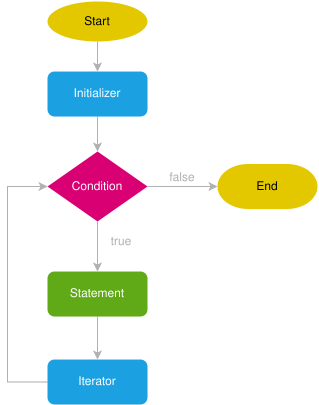
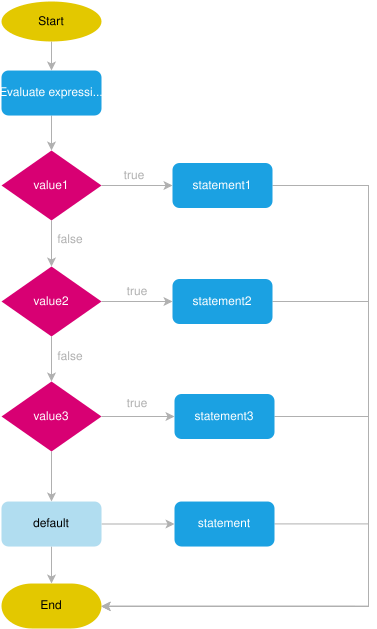
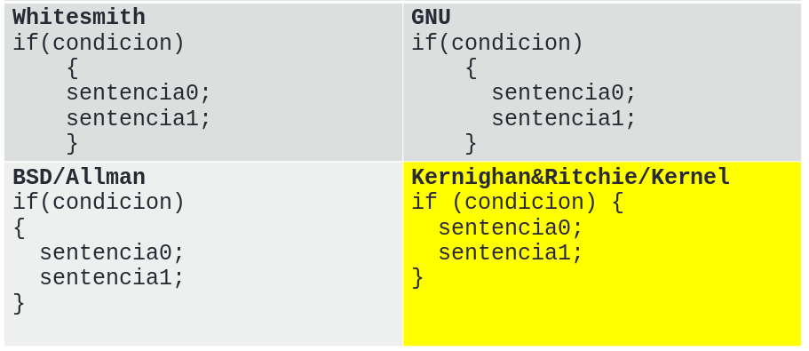

Introducción JavaScript 02¶
1. Estructuras de control¶
Las imágenes de estructuras de control de este tema están tomadas de este tutorial: JavaScript Tutorial
1.1. Selectivas¶
Puede consultar estos enlaces:
1.1.1. Selectiva if-else¶

Ejemplo
let edad = Number(prompt("Edad: "));
if (edad == null || edad < 18) {
alert("Menor de edad o no la indica");
}
else {
alert("Mayor de edad");
}
1.1.2. Selectiva if-elseif¶
Se usa else if para especificar una nueva condición si la condición inicial es falsa. Por ejemplo
if (time < 10) {
greeting = "Good morning";
} else if (time < 20) {
greeting = "Good day";
} else {
greeting = "Good evening";
}
Como se observa en esta figura se pueden "encadenar" varios else if:

Ejemplo de varios else if encadenados:
let nota = Number(prompt("Nota: "));
if (nota < 5) {
alert("Suspendo");
} else if (nota < 6) {
alert("Aprobado");
} else if (nota < 9 ) {
alert("Notable");
} else if (nota <= 10) {
alert("Sobresaliente");
} else
alert("Nota fuera de rango");
1.2. Bucles: bucle for¶
Vea el diagrama clásico de un bucle for

[Uniwebsidad]"mientras la condición indicada se siga cumpliendo, repite la ejecución de las instrucciones definidas dentro del for. Además, después de cada repetición, actualiza el valor de las variables que se utilizan en la condición".
- La "inicialización" es la zona en la que se establece los valores iniciales de las variables que controlan la repetición.
- La "condición" es el único elemento que decide si continua o se detiene la repetición.
- La "actualización" es el nuevo valor que se asigna después de cada repetición a las variables que controlan la repetición.
En el código de ejemplo vea que el paréntesis tiene tres partes separadas: inicialización, condición y actualización:
for (let i=1; i<=10; i++){
console.log(i);
}
let suma = 0;
for (let i=1; i<=10; i++){
suma = suma + i;
}
console.log(suma);
Hay ejemplos completos en los ficheros ejemplo016.html y ejemplo16.js.
2. Arrays¶
Un array almacena múltiples valores sobre un nombre único. Se puede acceder a un valor concreto usando el nombre del array y un índice (su posición en el array).
Existen varias formas de definir un array y la más habitual es la notación "literal" usando corchetes y una lista de valores separados por comas. Es posible conocer el tamaño del array con la propiedad length:
let marcas = ["Volvo", "Toyota", "Seat" ];
console.log(marcas.length)
Para acceder al valor de un elemento (o modificarlo) se usa su posición teniendo en cuenta que se indexa a partir del valor cero:
console.log(marcas[0])
console.log(marcas[1])
marcas[1] = "Renault";
console.log(marcas[1])
2.1. Arrays y bucles¶
Los bucles for son de gran utilidad al trabajar con arrays ya que se puede recorrer el array usando la variable de control del bucle como índice:
let temperaturas = [12.5, 13.6, 8.0, 19.2, 23.4];
for (let i = 0; i < temperaturas.length; i++) {
console.log(i, " - ", temperaturas[i]);
}
En el caso de que no sea necesario usar la variable de control en el cuerpo del bucle puede usar la "variante" for of
let media = 0;
let suma = 0;
for (let temp of temperaturas) {
suma += temp
}
media = suma/temperaturas.length;
console.log("Media: ", media)
El bucle for ofes equivalente a este
for (let i = 0; i < temperaturas.length; i++) {
suma += temperaturas[i];
}
Hay ejemplos completos en los ficheros ejemplo020.html y ejemplo020.js.
3. Métodos predefinidos¶
3.1. Cadenas¶
Puede consultar este enlace: https://www.w3schools.com/js/js_string_methods.asp
Un string o cadena de caracteres:
- dispone de la propiedad
length - se puede acceder a cada carácter con la notación de corchetes.
- se puede recorrer con un bucle for.
let nombre ="Ana";
let apellido = "Herrera";
console.log(nombre[0]);
console.log(nombre.length);
for (let letra of apellido)
console.log(letra)
Además dispone de varios métodos predefinidos, entre ellos:
- Concatenar con
+o con el métodoconcat(). toUpperCase(),toLowerCase(),trim(): mayúsculas, minúsculas, eliminar espaciosindexOf(character): devuelve la posición decharacteren el stringslice(ini, fin): extrae desdeinihastafiny devuelve el resultado.replace(orig, dest): reemplaza la cadenaorigcon la cadenadesty devuelve el resultado.split(separador): a partir de un string devuelve como resultado un array usando como delimitador la cadenaseparador
Vea un ejemplo de uso de split():
let lista = empresas.split(",");
console.log("empresas: ", empresas);
console.log(" empresas.length: ", empresas.length);
console.log("lista: ", lista);
console.log(" lista.length: ", lista.length);
Hay ejemplos completos en los ficheros ejemplo025.html y ejemplo025.js.
3.2. Números¶
Entre otras funciones puede usar estas:
isNaN(): devuelve verdadero si el valor pasado no es un numero (Not A Number)toFixed(N): devuelve un string conNdecimales.Number(): convierte string a Number.
Ejemplo:
let num1 = Number(prompt("num1: "));
let num2 = prompt("num2: ");
let coc = num1/num2;
if (isNaN(coc)==true) {
console.log("División no definida");
} else {
console.log("Div es igual a: " + coc);
}
num1 = 4564.34567;
console.log(num1);
console.log(num1.toFixed(2)); // 4564.35
console.log(num1);
Ejemplos completos en los ficheros ejemplo026.html y ejemplo026.js.
3.3. Arrays¶
Puede consultar estos dos enlaces:
Métodos principales a conocer:
concat(): concatena arraysjoin(separador): hace lo contrario asplitcon las cadenas, devuelve un string con los elementos del array separados porseparador.pop(): extrae un elemento al final del array y lo devuelve como resultado de la función.push(): inserta uno o varios elementos al final del array.shift()yunshift(): similares a apushypoppero extraen e insertan al principio del array.reverse(): modifica el array invirtiendo el orden de los elementos.toReversed(): para invertir los elementos sin modificar el original.slice(ini, fin): Selecciona los elementos desde ini hasta fin (sin incluirlo) y devuelve ese array como resultado sin modificar el original.splice(ini, nborrar, ele1, ele2,..): permite insertar elementos nuevos (ele1, ele2,...) en la posiciónini. También permite eliminarnborrarelementos desee la posiciónìni. https://www.w3schools.com/js/js_array_methods.asp#mark_splice
Ejemplos completos en los ficheros ejemplo030.html y ejemplo030.js.
3.3.1. Ordenar arrays¶
El método sort() ordena alfabéticamente (de forma ascendente). Si desea ordenar de forma descendente puede usar el método reverse() después de la ordenación.
// The sort() method sorts an array alphabetically: LO MODIFICA
const fruits = ["Banana", "Orange", "Apple", "Mango"];
console.log(fruits);
fruits.sort();
console.log(fruits);
Como la ordenación por defecto es alfanumérica si desea ordenar números necesita una función auxiliar que indique el criterio de ordenación:
// ordenar números: hace falta función de comparación
// si negativo a menor, si positivo b menor, si cero no intercambio
function compara(a, b){
return a - b;
}
let points = [40, 100, 1, 5, 25, 10];
console.log(points);
points.sort(compara);
console.log(points);
Al igual que reverse() y toReversed() existe toSorted(). Con este último el original se mantiene y se devuelve una copia ordenada.
Tiene ejemplos en los ficheros ejemplo031.html y ejemplo031.js.
3.3.2. Buscar en arrays¶
Algunos métodos de búsqueda los puede encontrar en este enlace: W3schools: Array Find and Search Methods. Los básicos son:
indexOf(ele): buscaeleen el array y devuelve la posición de su primera ocurrencia (o -1 si no lo encuentra).lastIndexOf(): similar al anterior pero buscando desde el final.includes(): comprueba si el elemento está incluido y devuelvetrueofalse.
Tiene ejemplos en los ficheros ejemplo032.html y ejemplo032.js.
4. Funciones¶
4.1. Función sin parámetros¶
En primer lugar se presenta una función sin parámetros y que no retorna nada. Vea como se define la función:
// Definición función
function linea () {
for (let i=0; i < 80; i++)
document.write('*');
document.write("<br/>");
}
Y ahora como se utiliza, su llamada o invocación:
// Invocación función
linea();
document.write("Hola Mundo! <br>");
linea();
4.2. Función con parámetros¶
Sería deseable en el ejemplo previo que se puedan generar líneas de distintas longitudes con esa función. Para ello la función debe recibir de alguna forma la longitud de la línea, y la forma de hacerlo es mediante un parámetro que se especifica en los paréntesis de la definición:
// Invocación función
function linea01 (tam) {
for (let i=0; i < tam; i++)
document.write('*');
document.write("<br/>");
}
Observe cómo se añade el parámetro tam en los paréntesis, y cómo se usa como límite en el bucle for para indicar el número de repeticiones.
Si la función recibe un parámetro hay que modificar la llamada o invocación e indicar qué valor tomará ese parámetro. Vea un ejemplo usando un número o uan variable:
linea01(5);
longitud = 40
linea01(longitud);
Se podría mejorar la función con un segundo parámetro, el carácter que se usa para generar la linea:
// función con dos parámetros
function linea02 (tam, letra) {
for (let i=0; i < tam; i++)
document.write(letra);
document.write("<br/>");
}
Y la llamada ahora se modifica para indicar ese segundo parámetro:
linea02(40, "=");
let longitud = prompt("Tamaño");
let car = prompt("carácter: ");
linea02(longitud, car);
También es posible invocar la función linea02 desde otra función. En este ejemplo se invoca la función linea02 en el bucle for de la función piramide
// función que usa otra función
function piramide(altura) {
for (let i = 1; i <= altura; i++) {
linea02(i, "*");
}
}
let altura = prompt("Altura: ");
piramide(altura);
Tiene los ejemplos en los ficheros ejemplo040.html y ejemplo040.js.
4.3. Función que devuelve (retorna) resultado¶
Si una función realiza algún tipo de cálculo el valor calculado se devuelve como resultado de la función. Como ejemplo se propone una función que calcula la media de un array recibido como parámetro:
function media(lista) {
let suma = 0;
for (let i = 0; i < lista.length; i++) {
suma += lista[i]
}
return suma/lista.length ;
}
Observe que se calcula la media y ese valor calculado se indica en la sentencia return que cierra la función. Para usa el valor devuelto por la función es necesario asignar la invocación de la función a una variable (o usarla en una expresión).
Vea como el resultado de la llamada media(edades_A) se asigna a la variable medA
let edades_A = [23, 34, 45, 19, 25, 31];
// se asigna el valor de retorno de la función a medA
let medA = media(edades_A);
Un ejemplo del uso de esta función con dos arrays distintos:
let edades_A = [23, 34, 45, 19, 25, 31];
let medA = media(edades_A);
let edades_B = [45, 51, 37, 28, 18];
let medB = media(edades_B);
if (medA>medB)
console.log("A > B");
else if (medA<medB)
console.log("A < B");
else
console.log("A = B");
Tiene ejemplos en los ficheros ejemplo041.html y ejemplo041.js.
Para ver la importancia de devolver un valor como resultado de la función intente hacer este ejemplo previo sin devolver el valor.
5. Objetos¶
Haremos una breve introducción al tema de los objetos en JavaScript. Tiene una referencia adicional en W3Schools: JavaScript Objects
Los objetos son variables que contienen propiedades y métodos. Los objetos se delimitan con llaves. Veamos un primer ejemplo de objeto con propiedades
let alumno = {
nombre: "Ana",
apellidos: "Milton",
id: 5566
};
Las propiedades del objeto son pares key:value (nombre: valor), si hay varias separadas por comas. Se puede acceder a las propiedades del objeto de dos formas, notación de punto y de corchetes:
console.log(alumno.nombre); // 1)
console.log(alumno["nombre"]); // 2)
5.1. Recorrer propiedades de un objeto¶
Para recorrer las propiedades de un objeto se puede usar una variante del bucle for (prop in obj). Este bucle permite acceder al nombre de la propiedad y a su valor:
for (let propiedad in objeto) {
console.log(propiedad, objeto[propiedad]);
}
Ejemplo:
for (let prop in alumno) {
console.log(prop + ":", alumno[prop]);
}
Esto código genera en consola la salida:
nombre: Ana
apellidos: Milton
id: 5566
5.2. Arrays de objetos¶
Puede definir un array donde cada elemento sea un objeto:
let alumnos = [
{nombre: "Ana Tendero", edad: 27 },
{nombre: "Luis Fornes", edad: 16 },
{nombre: "Bet Villa", edad: 21 }
];
Al ser un array lo puede recorrer con un bucle for y acceder en cada iteración a las propiedades de cada objeto. Vea un ejemplo del cálculo de la media:
function media(alumnos) {
var suma = 0;
for (var i = 0; i < alumnos.length; i++) {
suma += alumnos[i].edad;
}
return suma/alumnos.length;
}
document.write("<br>Media: ", media(alumnos) );
5.3. Objetos y Métodos¶
Además de propiedades, los objetos tiene métodos. Los métodos son acciones a realizar sobre los objetos. Ya ha usado usado objetos y métodos previamente:
-
Al usar variables de tipo string y sus métodos predefinidos
let nombre = “Alfredo”; console.log( nombre.length ); // propiedad console.log( nombre.indexOf(“l”) ); // método -
O al usar métodos de arrays
let temperaturas = [34, 37, 31, 28]; console.log( temperaturas.length ); // propiedad console.log( temperaturas.sort() ); // método
Vea un ejemplo cómo añadir un método a un objeto. Observe el uso de la palabra reservada this en la función: se refiere al objeto dónde se está invocando ese método y permite acceder a las propiedades del mismo, this.firstName y this.lastName:
let person = { // definición
firstName: "John",
lastName : "Doe",
id : 5566,
fullName : function() { // uso de this
return this.firstName + " " +
this.lastName;
}
};
Para invocar el método del objeto person se usa el nombre del método con los paréntesis (como en funciones):
// invocación
console.log( person.fullName() );
Otro ejemplo: se define un objeto vacío al que se le van añadiendo propiedades (id, modulos, notas) y un método (media):
let estudiante = {}; // se define objeto
estudiante.id = "ASIR-1-001";
// algunas propiedades son arrays
estudiante.modulos = ["LMSGI", "PAR", "FOL", "ISO"];
estudiante.notas = [4, 6, 9, 2];
// se añade método
estudiante.media = function () {
let suma = 0;
for (let i = 0; i < this.notas.length; i++)
suma += this.notas[i];
return suma/this.notas.length;
}
// accedemos a las propiedades
console.log(estudiante.id);
for (let i = 0; i < estudiante.modulos.length; i++)
console.log(estudiante.modulos[i], ":", estudiante.notas[i]);
//invocación del método
console.log("Media:", estudiante.media());
Tiene estos ejemplos en los ficheros ejemplo050.html y ejemplo050.js.
De todas formas no se pretende con esta introducción mostrar teoría de clases, objetos, herencia, etc. En ECMAScript el soporte de clases está en plena evolución. Basta por ahora saber usar las propiedades y métodos que nos proporciona el lenguaje y su notación.
6. Anexos¶
6.1. Math y random¶
El objeto Math incluye varios métodos matemáticos. Ejemplo de uso de alguno de ellos:
console.log(Math.sqrt(14));
let media = 5.6;
let m = Math.floor(media);
console.log(m);
m = Math.round(media);
console.log(m);
Otro es Math.random() que devuelve un número aleatorio entre 0 y 1 (sin incluir el 1).
Si desea un nº aleatorio entre 1 y 10 vea un primer ejemplo:
// random devuelve entre 0 y 1 con decimales..
// y necesitaremos floor para redondear a nº entero,
let aleat = Math.floor( (Math.random()*10) + 1 );
console.log(aleat)
Si desea que el número aleatorio se genere entre un min y un max:
/* aleatorio entre variables min y max */
let max = 100;
let min = 1;
aleat = Math.floor(Math.random()*(max - min + 1)) + min;
Incluso se puede crear una función para encapsular dicho cálculo y que reciba como parámetros el máximo y el mínimo, y que devuelva como resultado el número aleatorio:
/* o creamos una función */
function getRndInteger(min, max) {
return Math.floor(Math.random()*(max - min + 1)) + min;
}
aleat = getRndInteger(1,100);
Tiene estos ejemplos en los ficheros ejemplo051.html y ejemplo051.js.
6.2. Selectiva múltiple¶

Puede consultar el uso de esta estructura en este enlace: https://www.javascripttutorial.net/javascript-switch-case/.
Se usa a veces como simplificación de una estructura if-elseif
Con switch case
switch ( numero ) {
case 5:
...
break;
case 8:
...
break;
case 20:
...
break;
default:
...
break;
}
Y con if else if
if ( numero == 5 ) {
...
}
else if(numero == 8) {
...
}
else if(numero == 20) {
...
}
else {
...
}
6.3. Bucles while y do while¶
while: https://www.javascripttutorial.net/javascript-while-loop/do while: https://www.javascripttutorial.net/javascript-do-while/
La diferencia principal es cuándo se evalúa la condición: antes o después de la primera ejecución del bucle.
do {
// statements;
} while(expression);
while (expression) {
// statements
}
6.4. Variable contador, acumulador, bandera¶
- Contador: variable cuyo valor se incrementa o decrementa en una cantidad constante cada vez que se produce un determinado suceso o acción
- Acumulador: variable que suma sobre sí misma un conjunto de valores, para de esta manera tener la suma de todos ellos en una sola variable.
- Tenga en cuenta que debe iniciar contador y acumulador
- antes del bucle
- acumuladores a cero si suma, a uno si producto.
- banderas (flag, interruptor o conmutador): variable que puede tomar dos valores (verdadero o falso) a lo largo de la ejecución del programa y permite comunicar información de una parte a otra del mismo para bifurcar el código.
Ejemplos:
// contador: ejemplo, variable que cuenta el número de aprobados
var nAprobados = 0;
for (i = 0; i < notas.length; i++) {
if (notas[i] >= 5)
nAprobados++;
}
// acumulador: ejemplo, variable que acumula la suma
suma = 0;
for (i = 0; i < notas.length; i++) {
suma += notas[i];
}
// bandera o flag: ejemplo, detecta si hay algún suspenso
haySuspensos = false;
for (i = 0; i < notas.length; i++) {
if (notas[i] <0)
haySuspensos = true;
}
6.5. Estilos de llaves y tabulación¶
- Conviene elegir un estilo, y usar siempre el mismo.
- Sobre el sangrado, hay dos corrientes:
- usar el carácter tabulador
- Usar espacios (2, 4...)

6.6. Métodos de arrays avanzados¶
Vamos a presentar los métodos:
forEacheveryysomemapyfilter
Estos métodos reciben como parámetro una función llamada de retorno. Y esa función se aplicará a cada uno de los elementos del array. La función de retorno o comprobación puede tener hasta tres parámetros:
- El primero es el elemento: elemento del array procesado
- El segundo es el indice: índice del elemento procesado
- El tercero es el array: el array (completo) que se está procesando.
function fRetorno(elemento, indice, array) {
...
}
6.6.1. forEach¶
Vea como funciona forEach en los ejemplos de los ficheros ejemplo060.html y ejemplo060.js. En ellos se aprecia cómo se construye una función de retorno y como se invoca el método forEach.
El método forEach va llamando a la función de retorno para cada elemento del array:
let numeros = [4, 9, 16, 25];
// uno, por ser el 1ª es el elemento
function fcallback1(ele) {
document.write("<br>llamada a callback1: ", ele);
}
// LLAMADA A forEach,
// el nombre de la función es el parámetro
numeros.forEach( fcallback1 );
Se puede usar el método para recorrer un array de objetos y mostrar sus propidades:
let alumnos = [
{nombre: "Ana Tendero", edad: 27 },
{nombre: "Luis Fornes", edad: 19 },
{nombre: "Bet Villa", edad: 21 }
];
function muestraClase(val, index) {
var let = "<br> pos " + index + " > " +
val.nombre + " " + val.edad;
document.write(let);
}
alumnos.forEach(muestraClase);
6.6.2. every y some¶
every: devuelvetruesi la función de comprobación que recibeeverydevuelvetruepara todos los valores del array.some: devuelvetruesi la función de comprobación que recibesomedevuelvetruepara alguno de los valores del array.
Es importante destacar que la función de comprobación debe devolver true o false cuando procesa un elemento.
// función de comprobación
function compruebaAdulto(edad) {
return edad >= 18; // DEVUELVE true o false
}
let edades = [32, 33, 16, 40];
document.write("<br> Edades: ", edades);
let todos_adultos = edades.every(compruebaAdulto);
document.write("<br>Todos adultos: ", todos_adultos);
let algun_adulto = edades.some(compruebaAdulto);
document.write("<br>Algún Adulto: ", algun_adulto);
6.6.3. map y filter¶
El método map() crea un nuevo array con los resultados de la llamada a la función de retorno aplicados a cada uno de sus elementos.
En este primer ejemplo se usa la función sqrt de Math:
let valores= [1, 4, 9];
let raices = valores.map(Math.sqrt);
console.log("Raices: ", raices)
Y en este otro ejemplo se usa una función definida por el usuario. Observe que el parámetro de map es el nombre de la función (sin paréntesis)
function duplica(a) {
return a*2;
}
let dobles = valores.map(duplica);
console.log("dobles: ", dobles)
El método filter() crea un nuevo array con los elementos que pasen el test de la función de retorno (dicha función debe devolver true|false)
edades = [32, 33, 16, 40];
console.log("edades: ", edades);
// función de retorno
function esAdulto(edad) {
return (edad >= 18); // debe devolver true|false
}
let adultos = edades.filter(esAdulto);
console.log("adultos: ", adultos)
// función flecha, nueva sintaxis en ES6
let menores = edades.filter( a => a<18 );
console.log("menores: ", menores)
Tiene el código de los ejemplos en los ficheros ejemplo060.html y ejemplo060.js.